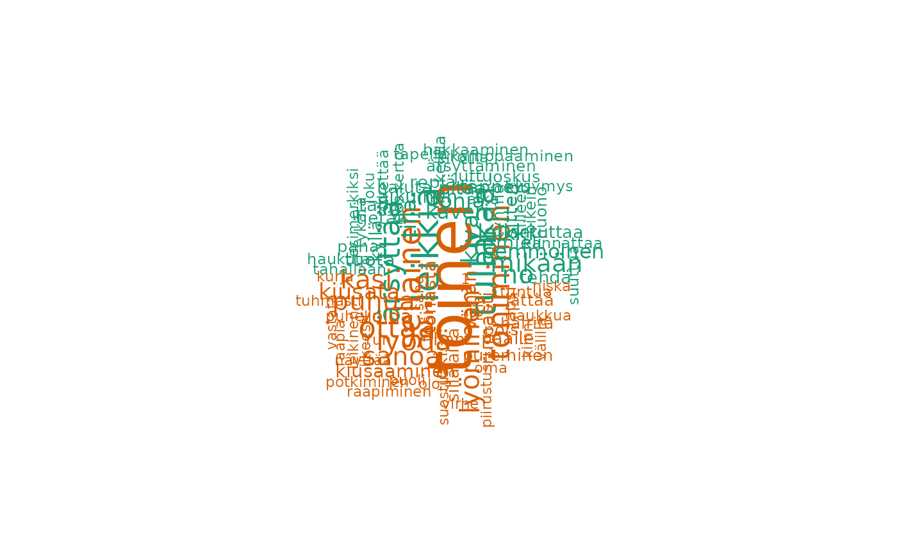
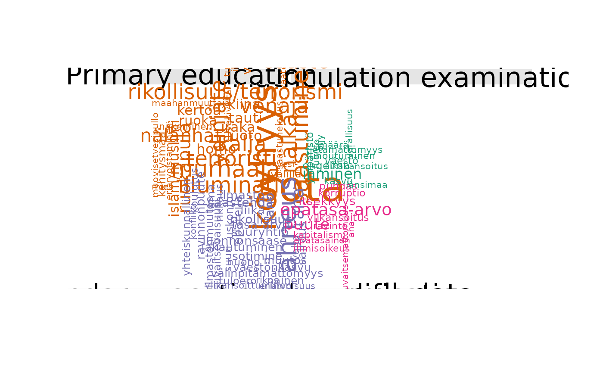
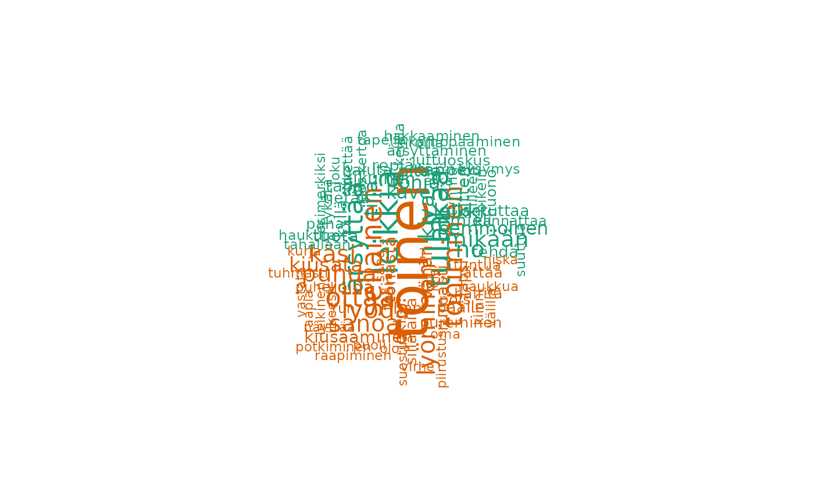
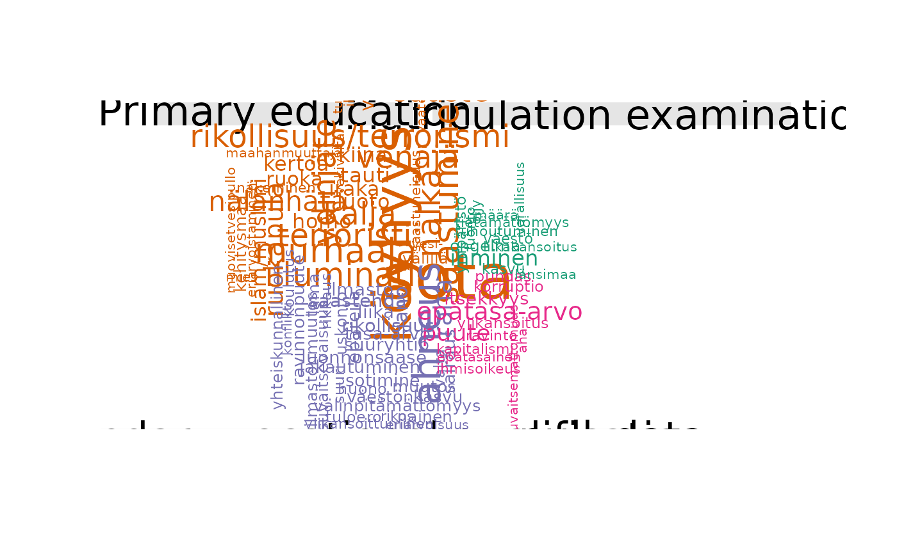

Make comparison cloud
fst_comparison_cloud.RdCreates a comparison wordcloud showing words that occur differently between each group. Data is split based on different values in the `field` column of formatted data. Results will be shown within the plots pane.
Usage
fst_comparison_cloud(
data,
field,
pos_filter = NULL,
max = 100,
use_svydesign_weights = FALSE,
use_svydesign_field = FALSE,
id = "",
svydesign = NULL,
use_column_weights = FALSE,
exclude_nulls = FALSE,
rename_nulls = "null_data"
)Arguments
- data
A dataframe of text in CoNLL-U format with additional `field` column for splitting data.
- field
Column in `data` used for splitting groups
- pos_filter
List of UPOS tags for inclusion, default is `NULL` which means all word types included.
- max
The maximum number of words to display, default is `100`.
- use_svydesign_weights
Option to weight words in the wordcloud using weights from a svydesign object containing the raw data, default is `FALSE`
- use_svydesign_field
Option to get `field` for splitting the data from the svydesign object, default is `FALSE`
- id
ID column from raw data, required if `use_svydesign_weights = TRUE` and must match the `docid` in formatted `data`.
- svydesign
A svydesign object which contains the raw data and weights.
- use_column_weights
Option to weight words in the wordcloud using weights from formatted data which includes addition `weight` column, default is `FALSE`
- exclude_nulls
Whether to include NULLs in `field` column, default is `FALSE`
- rename_nulls
What to fill NULL values with if `exclude_nulls = FALSE`.
Examples
fst_comparison_cloud(fst_child, 'gender', max = 50)
 s <- survey::svydesign(id=~1, weights= ~paino, data = child)
i <- 'fsd_id'
c2 <- fst_child_2
fst_comparison_cloud(c2, 'gender', NULL, 100, TRUE, TRUE, i, s)

T <- TRUE
fst_comparison_cloud(fst_dev_coop, 'education_level', use_column_weights = T)
#> Warning: muovisetvesipullo could not be fit on page. It will not be plotted.

s <- survey::svydesign(id=~1, weights= ~paino, data = child)
i <- 'fsd_id'
c2 <- fst_child_2
fst_comparison_cloud(c2, 'gender', NULL, 100, TRUE, TRUE, i, s)

T <- TRUE
fst_comparison_cloud(fst_dev_coop, 'education_level', use_column_weights = T)
#> Warning: muovisetvesipullo could not be fit on page. It will not be plotted.
